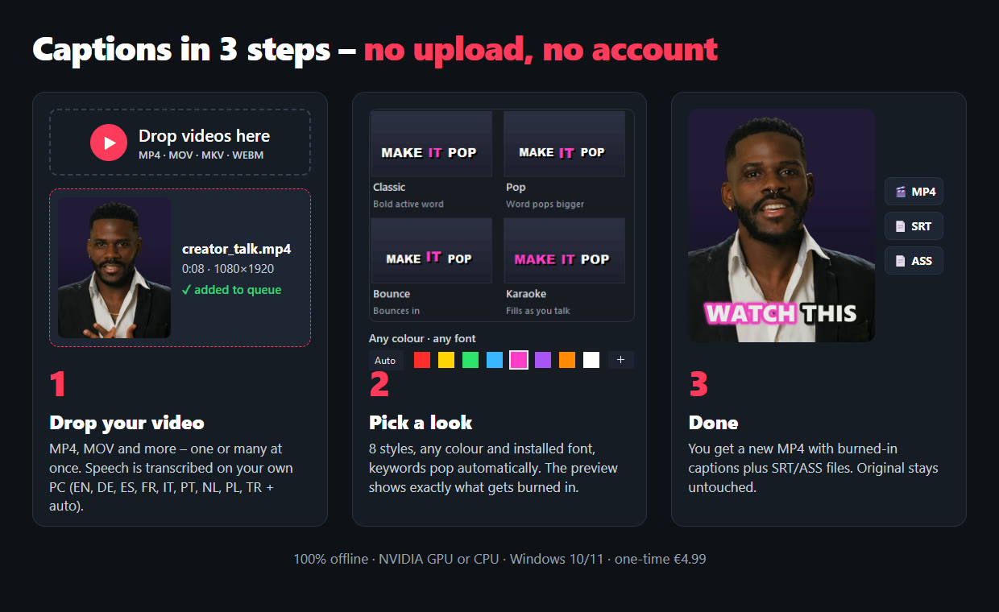

AutoSubs stays "Disconnected" in DaVinci Resolve 21.1.2 / 21.2 – what works right now
Short answer: it is not your PC. Recent DaVinci Resolve updates locked down the script environment that AutoSubs relies on. Below: what changed, the fixes users report as working, and how to keep captioning while you wait. (Status: 14 November 2026. AutoSubs is a free open-source project by Tom Moroney. We are not affiliated with it, and this page links to the original reports.)
Which problem do you have?
| Symptom | Resolve version | Fix |
|---|---|---|
| Workspace → Scripts → AutoSubs: nothing happens, no window | 21.1 / 21.1.1 | Fix 1 – open the app first |
| AutoSubs app is open, but it keeps showing "Disconnected" | 21.1.2 or 21.2 | Fix 2 – go back to 21.1.1 or wait for the update |
| You need captions today and don't want to change versions | any | Fix 3 – make the captions outside Resolve |
Fix 1: Resolve 21.1 – start the AutoSubs app yourself
Since Resolve 21.1, scripts in the Scripts menu run in a sandbox and can't start other programs any more (os.execute, io, ffi and require were removed). Since AutoSubs 3.10, the menu entry therefore only starts a hidden bridge inside Resolve. It can't open the app window.
- Open the AutoSubs app from the Start menu (Windows) or Applications (Mac). Do this once after every AutoSubs update, because opening the app rewrites the Resolve launcher script.
- In Resolve, run Workspace → Scripts → AutoSubs. Nothing visible happens in Resolve. That is expected.
- The app should now show Resolve as connected.
To check, open Workspace → Console before you click the script. "Ignoring stale request id …" is harmless. "Could not find the AutoSubs app resources" means you should reinstall and open the app once. (Source: AutoSubs issue #956, confirmed by the maintainer.)
Fix 2: Resolve 21.1.2 / 21.2 – the bridge itself is broken
Resolve 21.1.2 also removed loadfile, dofile and fu:SavePrefs from the script environment. AutoSubs 3.11.0 (the latest release, 29 September 2026) needs them, so it stays "Disconnected" even with Fix 1. The Console workaround from older guides (run the AutoSubs loader with dofile() in Workspace → Console, Lua) fails for the same reason: dofile no longer exists on 21.1.2, so the Console shows an error or nothing at all. Reports: #1040 (Resolve 21.1.2 Free, Windows), #1057 (21.2, works on 21.1), #1055.
- Wait for the update: a community fix is open as pull request #1045. It was not merged or released as of 14 November 2026. Watch the AutoSubs releases page.
- Go back to Resolve 21.1.1: several users report that AutoSubs works again on 21.1.1. Older versions are on Blackmagic Design's support page. Back up your projects first (Project Manager → right-click → Export Project Archive, saves a
.drawith media; or back up the database), because going back a version can make newer projects unreadable. - Build the fix yourself: only if you're comfortable building from source. The branch is linked in #1040. Please report "works" or "doesn't work" there, which helps the fix get released.
Fix 3: make the captions outside Resolve (no script, no plugin)
Anything that doesn't run inside Resolve isn't affected by the sandbox. There are two ways.
Free – SRT import: Subtitle Edit (open source) runs Whisper on your own PC and saves an SRT. In Resolve, use File → Import → Subtitle, drag the file onto the timeline and style it in the Inspector. You get normal subtitles without a highlighted active word. Full walkthrough: word-by-word subtitles in DaVinci Resolve free.
Animated word-by-word captions – WordCaps Studio (Windows, our app): drop in your exported edit, pick a look, check the text and press Burn. You get the MP4 with highlighted words, plus an SRT/ASS for your Resolve timeline. It's a standalone app, so Resolve updates can't break it. It works offline, needs no account, adds no watermark and costs €4.99 once. Disclosure: we make it, so weigh that accordingly. If AutoSubs works for you again, it's a great free tool.

Get WordCaps Studio – €4.99 oncePrefer Gumroad? Get WordCaps Studio on Gumroad – same price, one-time payment.
FAQ
Is this a problem with the free version only?
No. The reports cover both Resolve Free and Studio on Windows, Mac and Linux, because the sandbox applies to every Resolve 21.1+ build.
The Console trick with dofile() doesn't work – why?
That trick was for Resolve 21.1, where only the Scripts menu was blocked. Resolve 21.1.2 removed dofile and loadfile from scripts completely, so the Console can't start the loader anymore. Use Fix 2 (go back to 21.1.1 or wait for the AutoSubs update) or Fix 3.
Will reinstalling AutoSubs help?
On 21.1 / 21.1.1: yes, if the launcher is out of date. Reinstall, then open the app once. On 21.1.2 / 21.2: no, because the missing functions are in Resolve itself.
Does Resolve Studio have its own auto subtitles?
Yes. Create Subtitles from Audio is built into DaVinci Resolve Studio and doesn't need any script.
DaVinci Resolve is a trademark of Blackmagic Design. AutoSubs is an independent open-source project. This guide is independent and not affiliated with either. Information as reported in the public AutoSubs issue tracker on 14 November 2026.